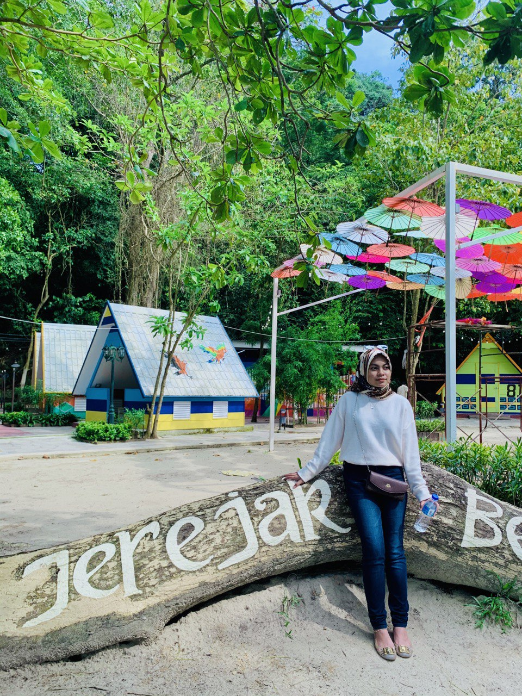
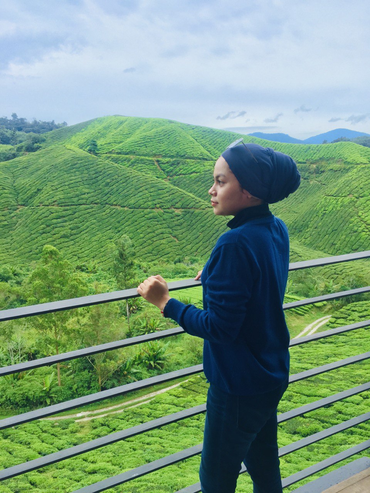
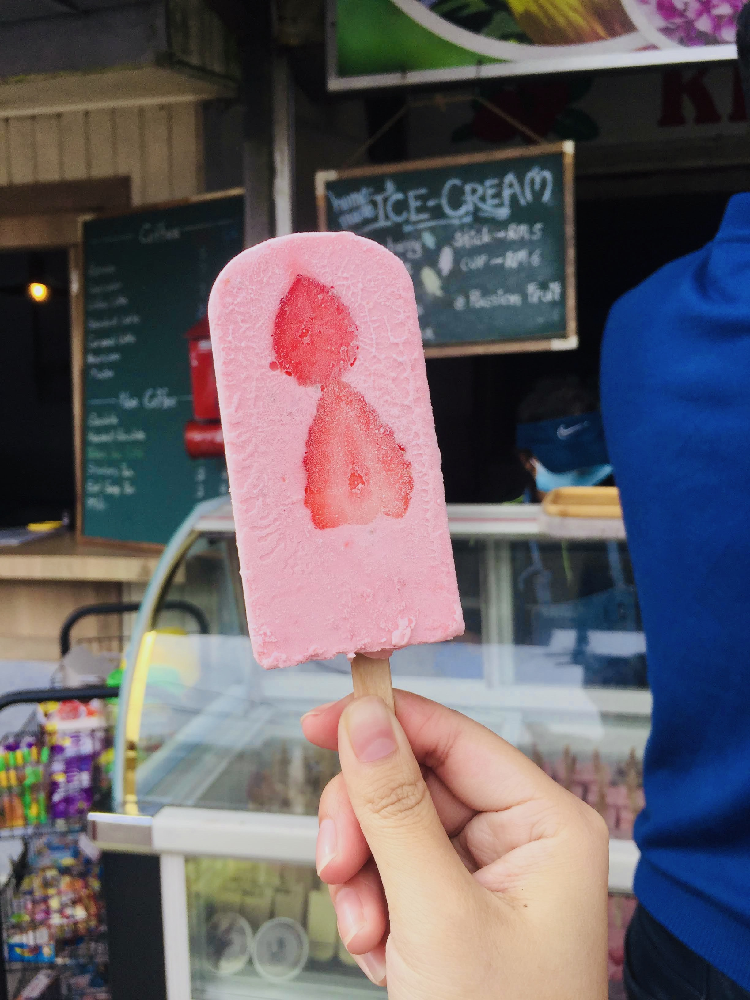
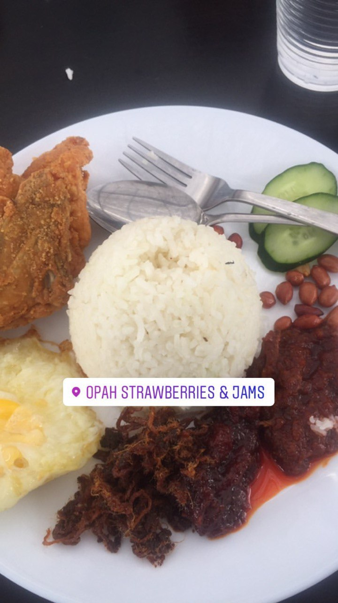
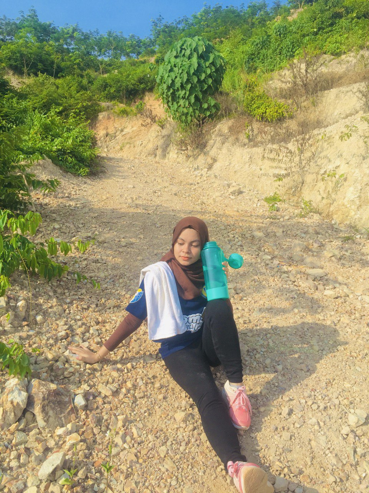
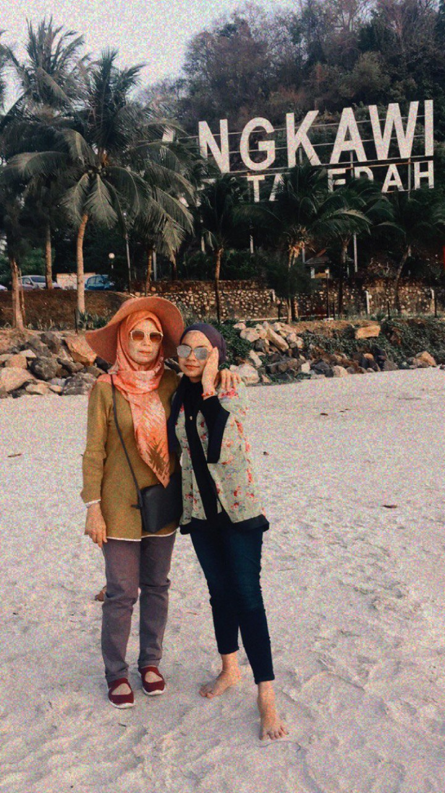

“Nothing ever becomes real till it is experienced.”
ALIAA DIYANA AZIZAN| Home | Biodata | Experience | Education | Family | Gallery |
|---|
| My Top 4 Exciting Experiences |
|---|
|

My Penang Trip to Jerejak Island
My very first time coming here and I only have to pay RM22 per person for round trip ticket. To get to the island, we have to take a boat, and can be there without time limit. It was an interesting experience. I will definitely come back here with my friends and my loved ones.
  
Cameron Highland Trip
This holiday involves my siblings without my mom and dad. We plan to go on weekdays to avoid traffic jams there. We had our breakfast at Opah Strawberries & Jams and had our tea-time at BOH Sungai Palas Tea Garden And we also visited Kea Farm and Strawberry Farm to buy some handicrafts for our family before we go back home.

My First Time Hiking Experience
This is my first time hiking on a place which is Bukit Tok Dun. I climbed to that hill to see the scenery but I did not make it to the top due to lack of stamina. So I stopped in the middle of the hill to rest for a while and continued on my way down from the hill. Definitely, I will go back to hiking when I have enough stamina soon.

Langkawi Island Trip
This trip is a family vacation and we booked a homestay for 2 nights. We went to Langkawi Wildlife Park and the place that we need to visit before returning which is Haji Ismail Group.